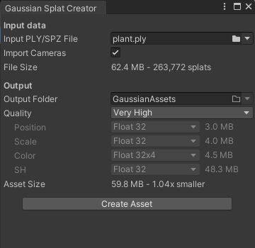
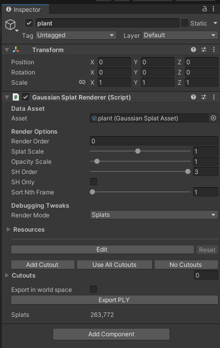

Rendering the model¶
Export the Gaussians¶
After training the Gaussians, export the model using Nerfstudio’s built-in command:
ns-export gaussian-splat \
--load-config /home/<user>/nerfstudio/outputs/plant/splatfacto/<timestamp>/config.yml \
--output-dir /home/<user>/nerfstudio/exports/gaussians \
--output-filename plant.ply \
--ply-color-mode sh_coeffs
The last line represents the spherical harmonic coefficients, which are used to determine the color and shading of each point based on the current rendered view direction. This allows different perspectives of the same model to produce different lighting effects according to direction, enhancing the model’s realism and visual depth.
The exported 3D model, as a .ply file, can be found under the exports folder in the nerfstudio directory.
📂.../
├──📂nerfstudio/
│ ├──📂exports/
│ │ ├──📂gaussians/
│ │ │ ├── 📄 plant.ply
│ │ │ │...
│ │ │...
│ │...
│...
Rendering in Unity¶
The .ply file is then rendered in Unity Engine using real-time visualization implemented in the Gaussian Splatting playground in Unity GitHub repository.
Download and install Unity 2022.3.7. Other versions of Unity may also work, but the GitHub repository uses Unity 2022.3.
Then, clone the repository:
git clone https://github.com/aras-p/UnityGaussianSplatting
In Unity, open the file \projects\GaussianExample and open GSTestScene.
Navigate to Tools > Gaussian Splats > Create GaussianSplatAsset. This will open a new window:

Select the .ply file from the folder location shown above, and click Create Asset.
In the Hierarchy tab, create an empty Game Object. Under its properties, click Add Component. Add Gaussian Splat Renderer and select the asset that was just created.
